Work from the original question before opening the solution
Each case starts from the actual exam page. Work on paper with the tables and formula sheet, then compare your reasoning step by step.
- Identify the variable type and the question.
- Write the formula or hypotheses before substituting numbers.
- Use the appropriate table and degrees of freedom.
- Show the calculation clearly.
- Finish with an interpretation in context.
May 14, 2024 · Medical costs, smoking and regression
This paper alternates between standard deviations, standard errors, a chi-square output, SER and a dummy variable.
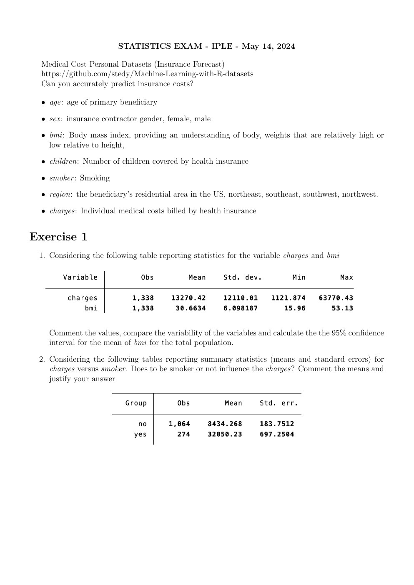
Exercise 1 · Complete reasoning
Compare variability
Charges are much more variable relative to their mean.
95% confidence interval for mean BMI
Recognise standard errors
The table gives standard errors of the group means, not SDs. Recover them only if needed:
Two-sample test
Reject equal means. Mean charges are substantially higher for smokers.
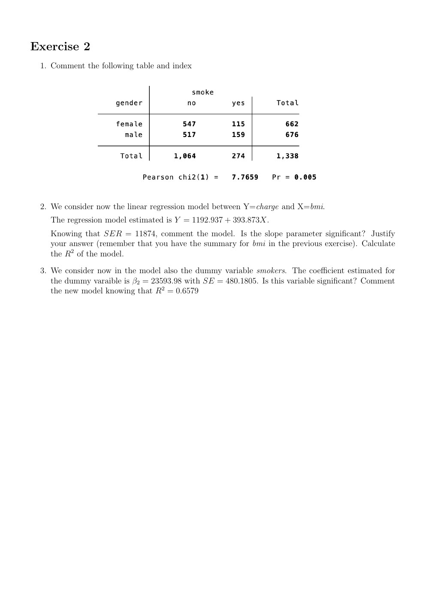
Exercise 2 · Complete reasoning
Gender × smoking
The exam reports χ²(1)=7.7659, p=0.005: reject independence, but the strength is weak.
Simple regression
Recover R² from SER
The slope is significant although BMI alone explains only about 3.9% of charge variability.
Add the smoker indicator
At the same BMI, smokers have much higher predicted charges. The expanded model has R²=0.6579.
November 6, 2025 · Occupation, ANOVA and the regression chain
This paper combines a nominal position index, a proportion interval, ANOVA, correlation, simple regression and a gender indicator.
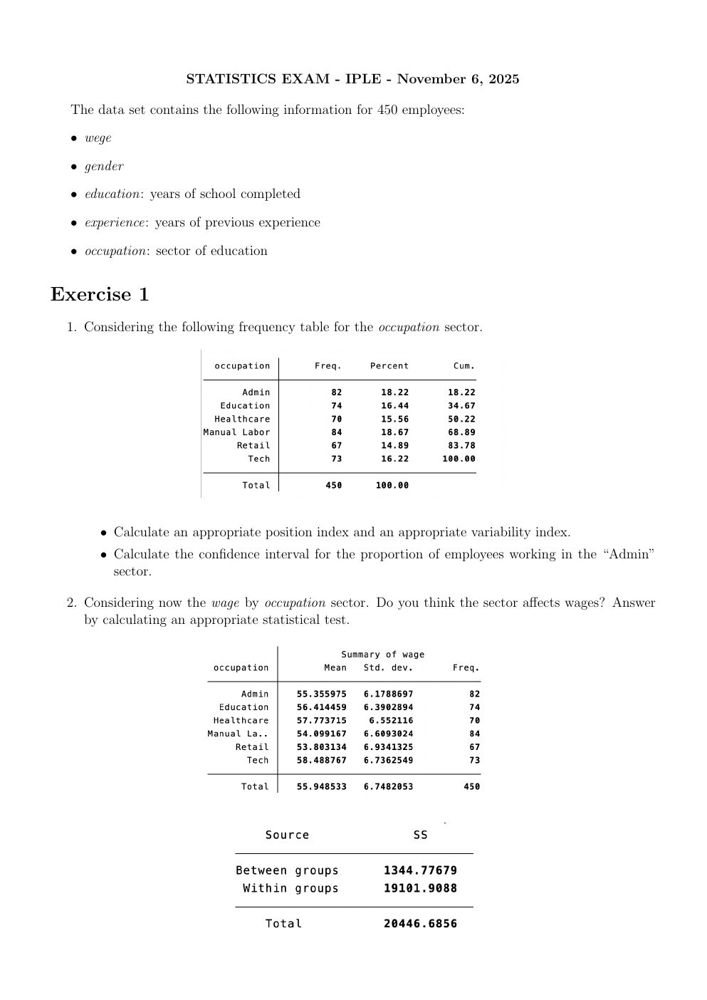
Exercise 1 · Complete reasoning
Nominal position index
Occupation is nominal, so the appropriate position index is the mode: Manual Labor, with frequency 84.
Admin proportion interval
ANOVA
Reject equality of all six mean wages.
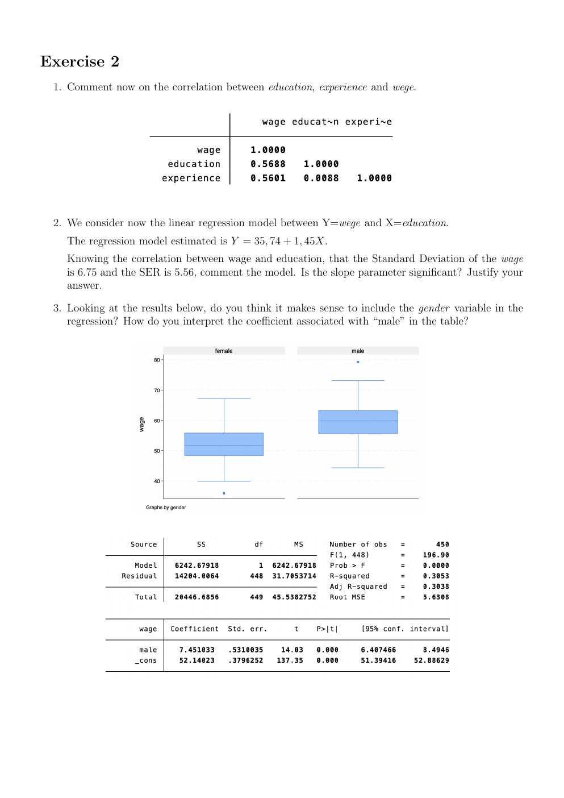
Exercise 2 · Complete reasoning
Read the correlations
Wage is moderately positively correlated with education (0.5688) and experience (0.5601); education and experience are almost uncorrelated (0.0088).
From r to R², F and t
Recover the slope SE and interval
Use SER as a check
The slight discrepancy is due to rounded printed values.
Interpret the male indicator
The printed dummy-only model estimates a 7.451-unit higher fitted wage for males than females. This is a significant unadjusted difference, not automatically a causal effect.
2026 · Three exam structures worth mastering
The 2026 papers vary the information supplied: sometimes SD, sometimes SE, sometimes a reported chi-square, sometimes a slope SE.
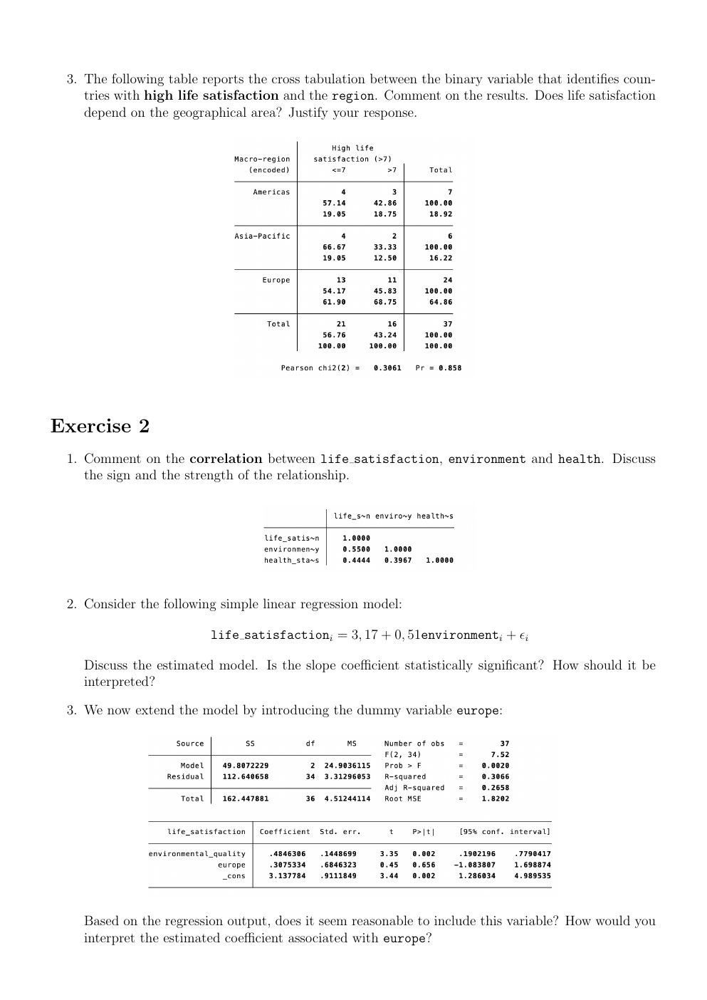
Key worked path
- Mean life satisfaction: 95% t interval [5.764, 7.181].
- Europe vs non-Europe pooled t: t=1.725, do not reject at 5%.
- High satisfaction × region: χ²(2)=0.3061, p=0.858; Cramér’s V≈0.091.
- Life satisfaction vs environment: r=0.5500, R²=0.3025, F=15.179, t=3.896.
- Europe indicator: t≈0.449, not significant; R² rises only from 0.3025 to 0.3066.
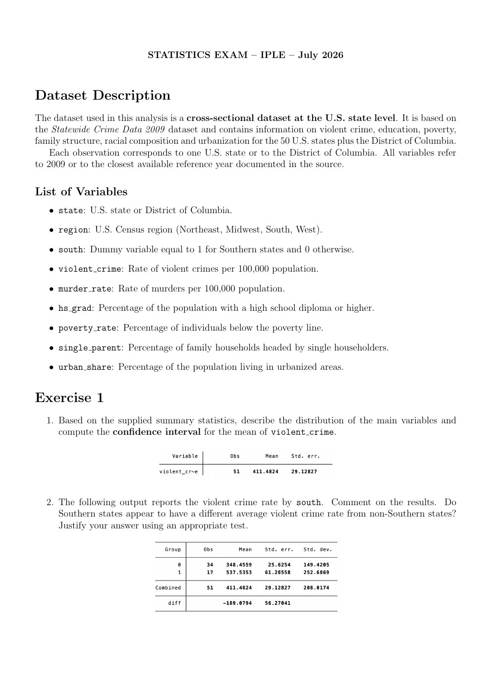
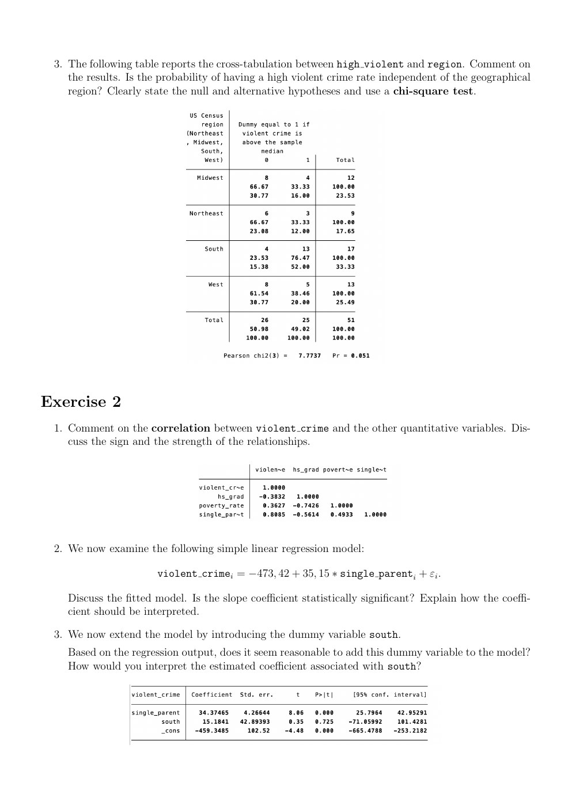
Key worked path
- The exam gives SE of the mean, not SD: recover s=SE√n.
- 95% interval for mean violent crime: [352.98,469.99].
- South vs non-South pooled comparison: t=3.360, reject equal means.
- Then analyse high crime × region by chi-square and continue with correlation, regression and the South indicator.
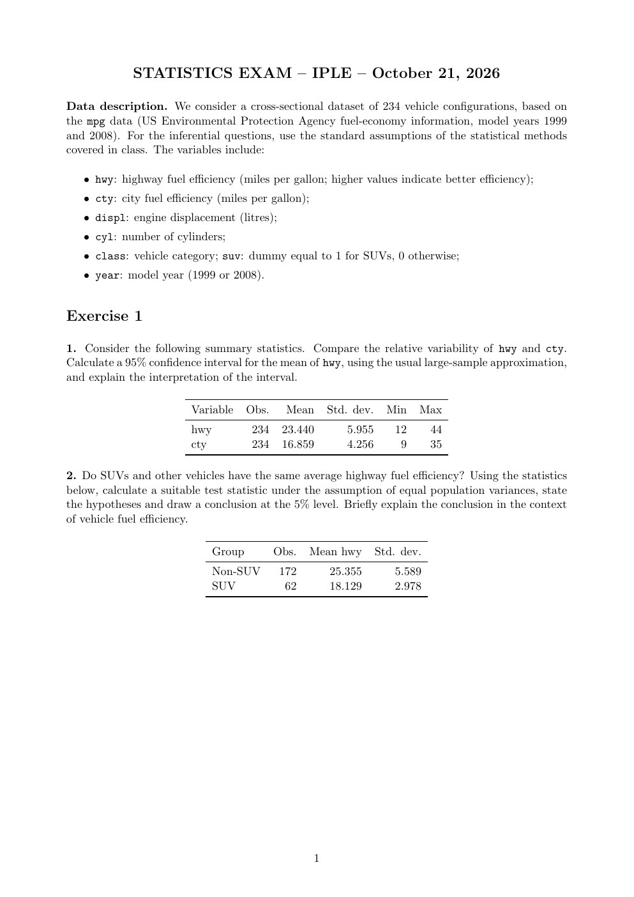
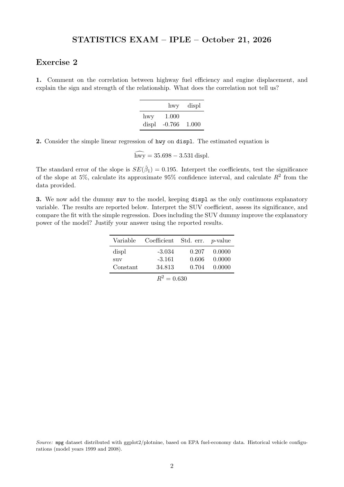
Key worked path
- CVhwy=0.2541 and CVcty=0.2524.
- 95% interval for mean highway mpg: [22.677,24.203].
- Non-SUV vs SUV pooled comparison: |t|≈9.69.
- hwy vs displacement: r=−0.766, so R²≈0.587.
- Slope test: −3.531/0.195≈−18.11; interval ≈ [−3.913,−3.149].
- SUV indicator: −3.161/0.606≈−5.22; expanded R²=0.630.
Past exam archive · 2021–2026
The complete PDF contains each original paper followed immediately by its detailed worked solution.
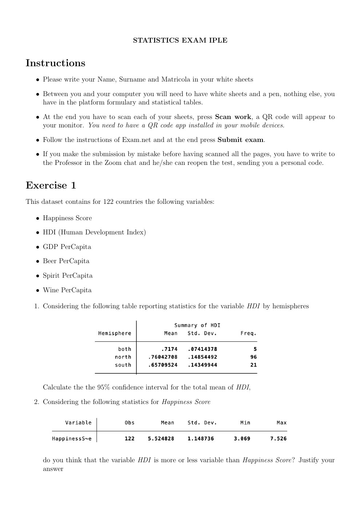
March 2021
HDI, happiness, relative variability, confidence interval, correlation, regression and hemisphere indicators.
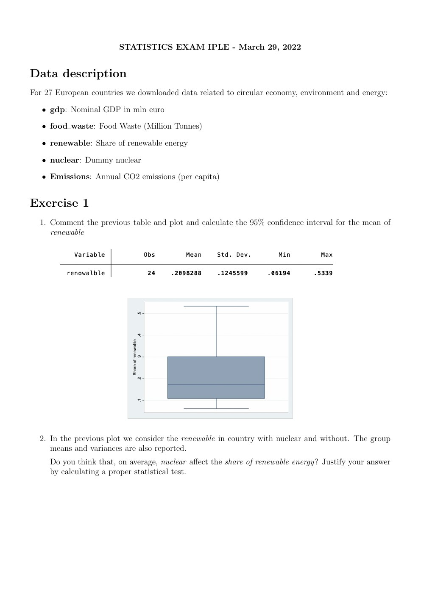
March 29, 2022
Renewable energy, two-group comparison, correlation and food-waste regression.
May 14, 2024
Medical costs, confidence intervals, t test, chi-square, regression and smoker indicator.
November 6, 2025
Occupation, ANOVA, correlation, regression chain and gender indicator.
January 17, 2026
Well-being, environmental quality, t test, chi-square and Europe indicator.
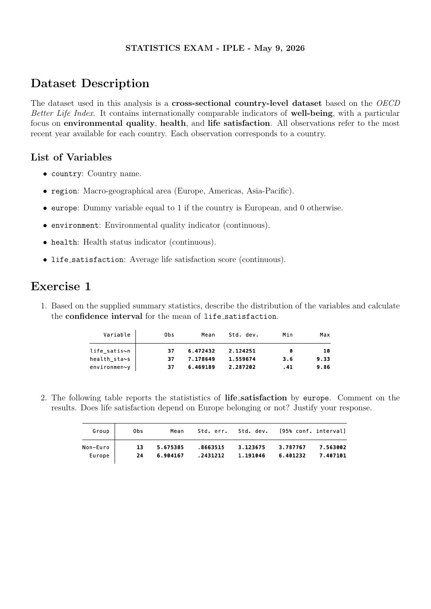
May 9, 2026
OECD well-being and geographical region with the same complete written-exam structure.
July 2026
Violent crime, regional association, chi-square, regression and South indicator.
October 21, 2026
Fuel efficiency, pooled t test, correlation, simple regression and SUV indicator.
Regression review · reconstruct everything from the information supplied
The guided exercise connects R², SER, ANOVA, F, t, confidence intervals, sample size and an indicator variable.
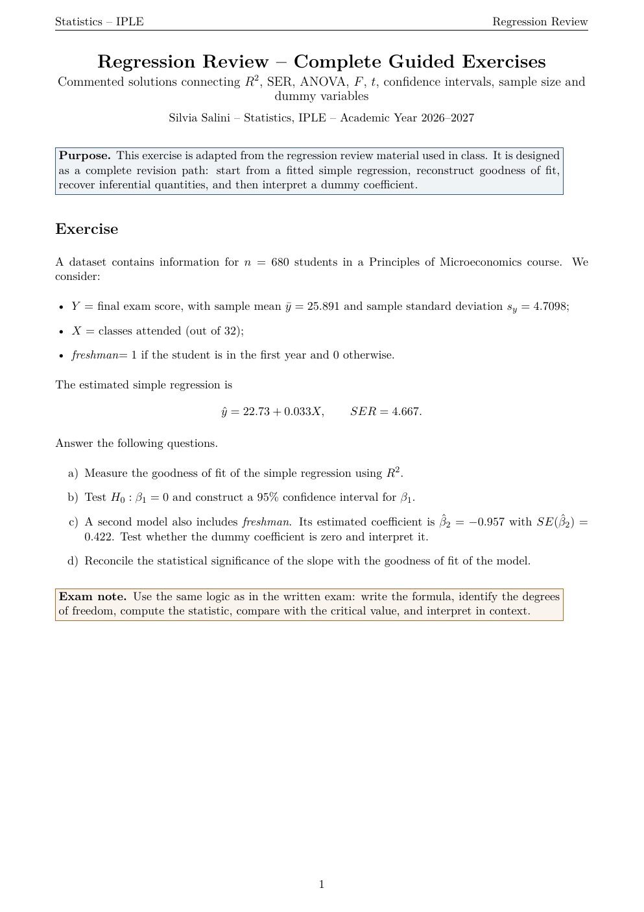
n=680 students; final exam score has SD 4.7098. The simple model is:
Reconstruct total and residual variability
Recover R² and F
Only about 1.95% of score variability is explained, but the slope can still be statistically significant.
Use F=t² and recover SE(β̂1)
Construct the slope interval
With very large df, use the closest conservative finite row available in the exam t table.
Add the freshman indicator
Holding attendance fixed, first-year students are predicted to score about 0.96 points lower than comparable non-first-year students. This is a conditional association.
With r=0.50, R²=0.25 in all three cases, but precision changes with n.
| n | F | t=√F | 5% conclusion |
|---|---|---|---|
| 10 | 2.67 | 1.63 | Do not reject H₀ |
| 100 | 32.67 | 5.72 | Reject H₀ |
| 1000 | 332.67 | 18.24 | Reject H₀ |